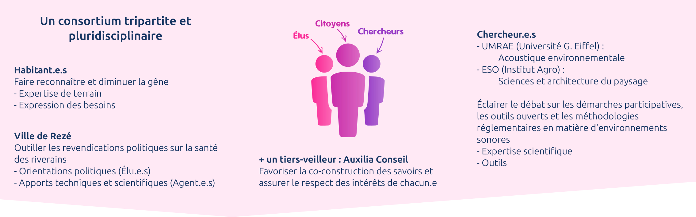
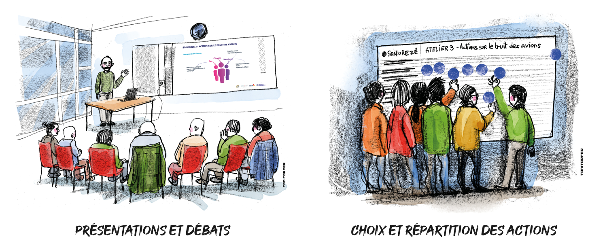
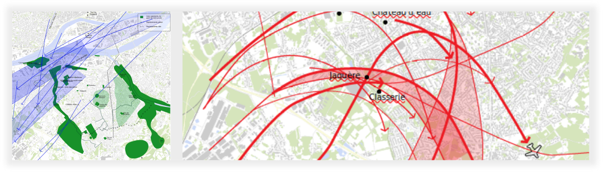
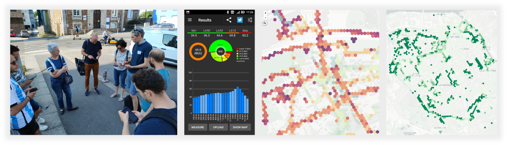
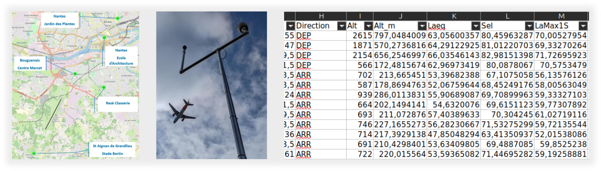
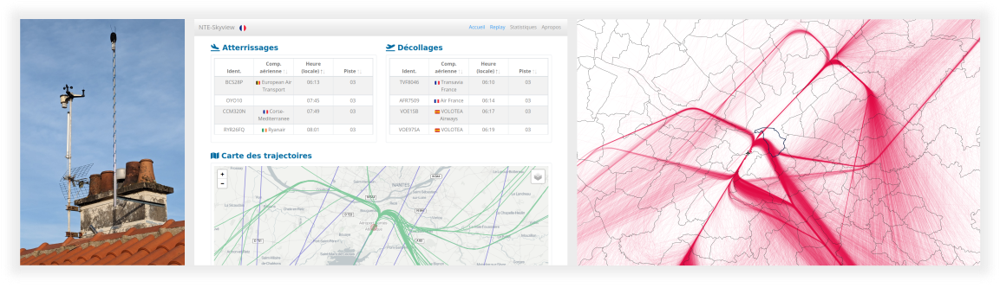
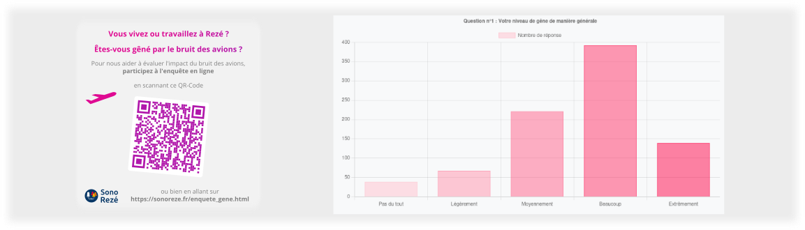

Préambule
L’action SonoRezé portant sur le bruit des avions s’est déroulée autour d’une série de 8 ateliers associant habitants, élus et services de la Ville de Rezé, chercheurs, ainsi que le Tiers-Veilleur.
Ce travail collaboratif a permis de faire émerger des actions, qui ont mobilisé différentes sources de données.
Les éléments ci-dessous présentent l'ensemble de ces points.
Recherche - Action
Collaborative
Une approche basée sur le triptyque "citoyens, élus et chercheurs"
Ce travail s’intègre dans un cadre de recherche-action collaborative, entre la ville de Rezé, les habitants et les chercheurs. L’intérêt de la mobilisation de ce triptyque est de s’appuyer sur l’expertise de chacun pour proposer un protocole d’action qui puisse influer sur les politiques locales, et permettre une appropriation des savoirs produits durant le processus.

Apport de la recherche-action collborative dans l’élaboration des politiques publiques
- « Les approches de recherche participative sont un moyen d’impliquer les citoyens dans la recherche scientifique par l’association de l’expertise citoyenne et de l’expertise scientifique.»
- «La recherche participative favorise un espace de dialogue et d’action entre citoyens et chercheurs.»
- «Il est nécessaire d'encourager les acteurs publics à s'ouvrir aux initiatives citoyennes pour améliorer continuellement leurs politiques publiques avec les citoyens,»
- « Nous appelons les acteurs publics à “ne plus avoir peur de miser sur l'intelligence collective dans la conduite des politiques publiques !”»
Propos recueillis dans les deux références ICI et ICI.

Concertation
Les ateliers
Les 8 ateliers ont permis :
- Un partage des expériences et des connaissances
- La mise en place de réflexions sur les modalités de diffusion des résultats

Les actions
Ces ateliers ont progressivement permis de définir les 4 actions suivantes :
1- Élaboration d'une carte de la perception du bruit par les habitants,
2- Analyse de la variabilité du bruit des avions,
3- Production de chiffres de sensibilisation au bruit des avions,
4- Diffusion d'une enquête de gêne.
Dans le détail, les résultats issus de ces actions sont présentés ICI.
Les données
utilisées en entrée
1. Entretiens individuels
Une série de 23 entretiens individuels a été réalisée auprès d'habitants de Rezé. Ces entretiens avaient pour objectif de mieux saisir l'expertise habitante en matière de perception des environnements sonores.
A l'issue des ces entretiens, une synthèse a été réalisée dans la perspective d'élaborer une carte de perception du bruit aérien. Ce travail est en cours et devrait aboutir à l'automne 2024.

2. NoiseCapture
Dans le prolongement de SonoRezé I, les habitants ont de nouveau été invité à réaliser (collectivement ou individuellement) des mesures de leur environnement sonore, à l'aide de l'application NoiseCapture. Les données ainsi collectées, permettent d'alimenter une carte interactive et sont librement réutilisables.
En outre, grâce aux mots clés (Tags) que les utilisateurs sont invités à renseigner à l'issue de la mesure, il est possible de produire des cartes alternatives, focalisées sur une source de bruit en particulier (ex: bruit routier, bruit d'animaux, ...).

3. Stations de mesure
Le consortium SonoRezé a obtenu, de la part de la Direction départementale des territoires et de la mer (DDTM) de Loire-Atlantique, les données issues des stations de mesure de bruit, réparties autour de l'aéroport et pour les années 2022 et 2023.
Dans ce jeu de données, nous avons tout une série d'indicateurs acoustiques, dont le Lmax* et le SEL**, à chaque passage d'avion (les stations ne mesurant pas en continue, les appareils se déclenchent avant le passsage de l'avion et se coupe une fois qu'on ne l'entend plus).
- * Lmax : niveau acoustique maximum d'un seul événement. Il exprime la plus grande valeur mesurée lors d'un survol.
- ** SEL (Sound Exposure Level - niveau d'exposition sonore) : indicateur acoustique utilisé pour mesurer l'énergie totale d'un événement sonore comme s'il s'était produit en une seconde. Dans la surveillance du bruit des aéroports, le SEL est utilisé pour quantifier l'impact sonore des décollages et des atterrissages des avions sur les zones environnantes.
Pour les besoins de l'étude :
- seules les données de 2023 ont été traité,
- seules les stations de La Classerie (Rezé) et de l'ENSA (Ecole d'architecture - Nantes) ont été utilisées.

4. Trajectoires NTE-Skyview
NTE-Skyview est un site web permettant de suivre et d'analyser le trafic aérien de l'aéroport de Nantes à travers toute une série de graphiques et de cartes interactives.
Les données présentées sur cette plateforme sont collectées grâce à un récepteur ADS-B (Automatic Dependent Surveillance-Broadcast), qui scanne tous les aéronefs dans un rayon de 300km. Les trajectoires ainsi enregistrées sont constituées d'un point GPS toutes les secondes.
Cette plateforme, indépendante, est développée par un rezéen participant aux travaux du projet SonoRezé. À ce titre, il a rendu accessible aux membres du projet les données de trajectoires des avions, ainsi que les métadonnées associées (compagnie, type d'avion, ...) pour la période allant de novembre 2019 à janvier 2024.
Une bonne partie des résultats présentés ICI, est issue de traitements réalisés sur ce jeu de données.

L’équipe SonoRezé remercie chaleureusement le créateur de NTE-Skyview pour sa confiance et son aide.
5. Enquête de gêne
Une enquête de gêne a été envoyée aux habitants de Rezé par l'intermédiaire du Rezé Mensuel.
Quelques questions, conformes aux standards des enquêtes de gêne ont été posée, dans le but de croiser les résultats avec les analyses produites dans le projet et les chiffres présentés dans le Plan de Prévention du Bruit de l'Environnement (PPBE).
Les résultats de cette enquête sont visibles dans la page Résultats.
